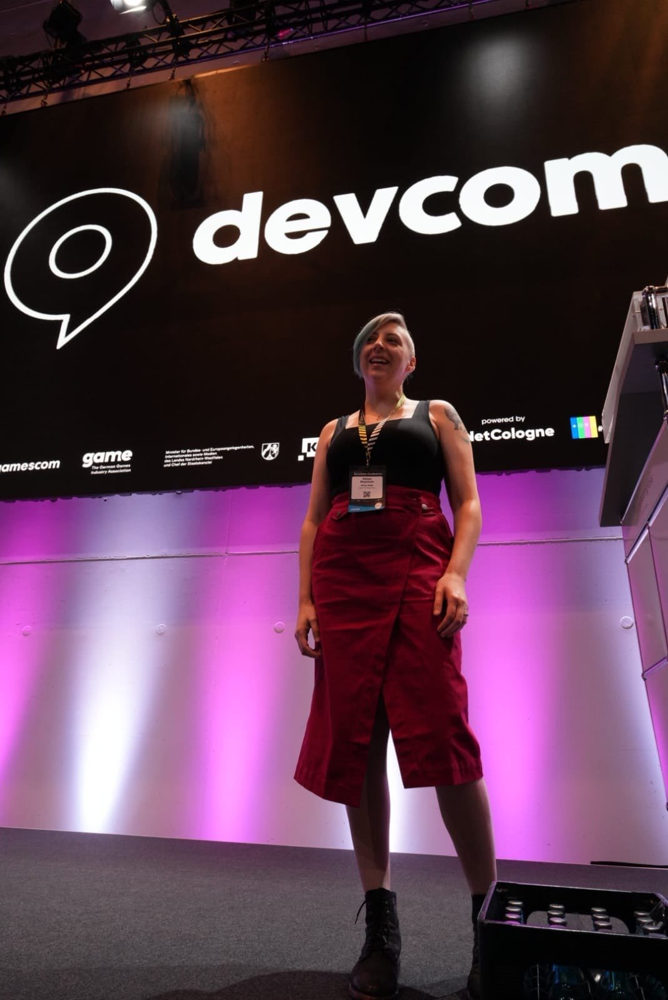
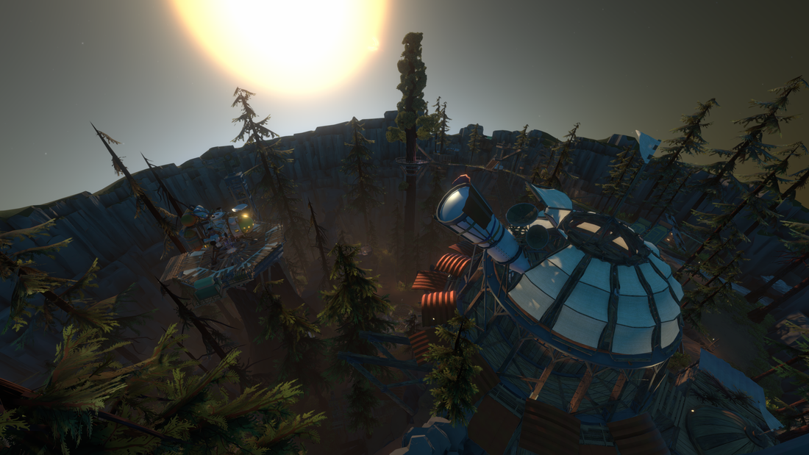

CASO 01
Kelsey Beachum
Escritora e designer narrativa

Biografia
Kelsey Beachum é escritora e designer narrativa de jogos. Antes de trabalhar em tempo integral na indústria, passou por áreas editoriais, incluindo a Cryogenic Society of America e o jornal satírico The Onion. Em seu site profissional, ela informa que começou a criar jogos em 2011 e entrou na indústria em tempo integral em 2017.
Seu trabalho mais conhecido é a narrativa de Outer Wilds. Beachum também trabalhou nos conteúdos adicionais de The Outer Worlds. Pela escrita de Outer Wilds, foi finalista do Nebula Award de 2019 na categoria de escrita para jogos.
Fonte da biografia: Kelsey Beachum, página About.
JOGO EM DESTAQUE
Outer Wilds

Kelsey Beachum escreveu os textos encontrados em Outer Wilds para sustentar uma investigação não linear. Em vez de entregar uma história em ordem fixa, os registros dos Nomai, uma antiga civilização alienígena, permitem que o jogador conecte descobertas feitas em lugares diferentes.
Em seu portfólio, ela explica que cada texto precisava combinar três tarefas: comunicar uma pista, apresentar uma regra ou informação do mundo e desenvolver temas, personagens ou arcos narrativos. A escrita precisava funcionar tanto para quem acabava de chegar quanto para quem já conhecia parte do mistério.
Beachum desenvolveu a voz dos Nomai por meio de diálogos ramificados e colaborou com a direção criativa e a liderança de design na ferramenta de tradução dos textos em três dimensões. Também escreveu registros como o diário de Riebeck, que orienta a exploração. Sua contribuição conecta linguagem, pistas e interação: a leitura faz parte da descoberta, em colaboração com os demais sistemas do jogo.
Fontes: Writing Samples, Kelsey Beachum e Projects, Kelsey Beachum.